MONUMENTOS
El Castillo
Los restos del castillo se extienden a lo largo de
casi un kilómetro, fueron testigos de la lucha que mantuvieron sus habitantes con
Aníbal, dando lugar a la II Guerra Púnica. Fue la base de las construcciones de sus distintos moradores:
íberos, romanos, visigodos, árabes...; todos y cada uno de ellos dejaron su huella.
Los indicios de la presencia romana y anteriormente
ibera, con la ocupación, desmantelación y reutilización de sus elementos
es difícil de constatar. En las laderas sur y este han aparecido
vestigios romanos y en la parte occidental se halla un lienzo de la
muralla íbera y restos excavados en la roca de dos casas.
|
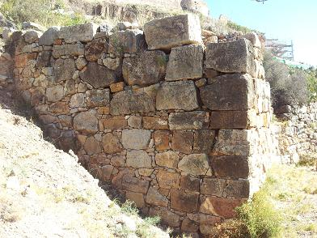 |
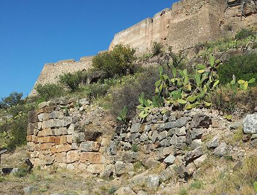 |
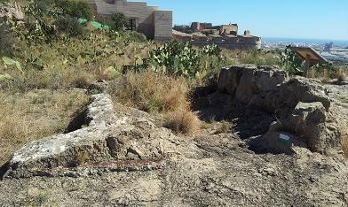 |
Es el lugar donde estuvo emplazada la antigua ARSE
ibérica y la SAGUNTUM romana.
Dada su importancia histórica, fue declarado en 1931 Monumento Nacional.
|
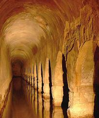 |
Se halla dividido en siete plazas o recintos independientes: la plaza de
Almenara, la plaza de Armas, tres Castelles, la plaza de la Conejera, la plaza de la
Ciudadela, la plaza Dos de Mayo, la plaza de San Fernando y Estudiantes.
En la plaza de Almenara los restos son escasos, encontramos una pequeña
cisterna romana rectangular, reaprovechada en épocas posteriores y construida
con opus signinum. Un poco más abajo aparece otra cisterna más
deteriorada. En la parte más alta de la plaza hay otras construcciones que se
asientan sobre muros romanos. En tres Castelles solo nos queda el
recinto de muralla este. En este lugar encontramos vestigios de dos cisternas
romanas construidas con opus caementicium y de una cantera, que se
constata por los huecos existentes para las cuñas de madera y su escalonamiento.
En la plaza de armas se situaba el foro romano. La pendiente del terreno hizo
que se tuviera que aterrazar. Hoy solo se conservan sus cimientos. Hay vestigios
de grandes construcciones realizadas con opus caementicium y cisternas.
En este recinto se hallaron restos escultóricos como un relieve con dos patas de
caballo, un trozo de cornisa con dentículos y contario, un relieve zoomorfo, una
cabeza masculina con corona de laurel, dos pezuñas de caballo, etc. |
|
Todas estas
obras están realizadas en caliza travertina. El origen del foro se cree que es
de época augusta. También han aparecido los restos de cuatro tabernae y
la basílica, de la que solo se conservan sus cimientos. En la plaza de san
Fernando aparecen los restos de dos edificios. Se observa la base de un pórtico
y sillares de cimentación. En la plaza de estudiantes aparecen los restos de
viviendas, escalonadas por la pendiente. También existe varias cisternas
construidas con opus caementicium y revestida con opus signinum. En
la Ciudadela supuestamente estarían los edificios monumentales, se han hallado
gran cantidad de restos de pavimentos realizados con opus signinum y otros
con argamasa y grava, vinculados a antiguos edificios hoy desaparecidos. |
 |
|
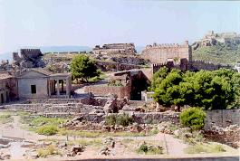 |
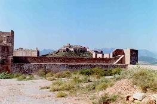
|
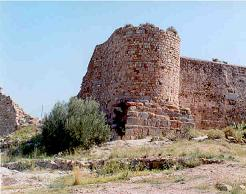 |
|
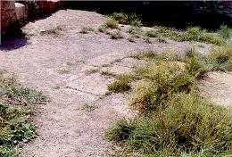
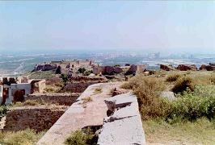 |
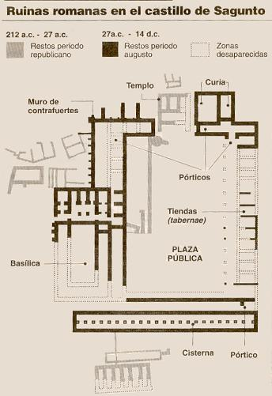 |

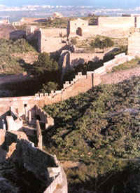 |
|